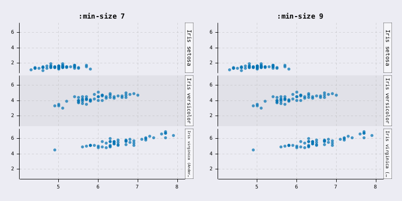
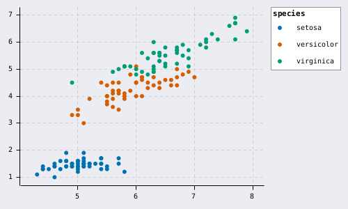
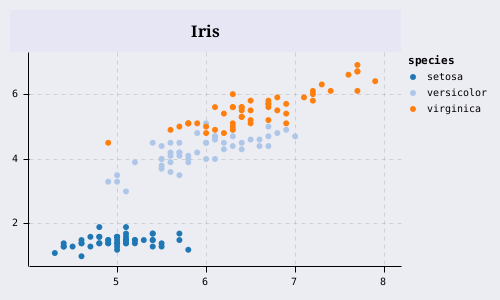
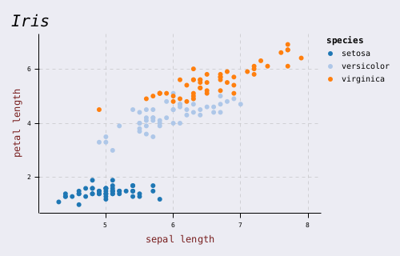
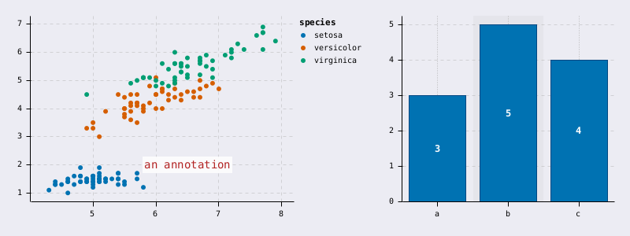
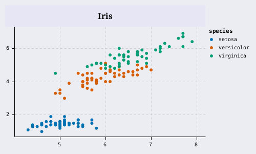

9 Theme
The theme holds every style default: backgrounds, grid lines, axes, legends, palettes, text roles and each chart kind’s style. A plot’s :theme is deep-merged over the default theme, so it names only what changes. Each section below lists its keys with their default values and changes some of them.
(ns reference.theme
(:require [fastmath.core :as m]
[cljplot2.chart :as chart]
[cljplot2.core :as plot]
[cljplot2.describe :as describe]
[notebook-utils :as nu]))Data: Edgar Anderson’s iris measurements, R datasets package iris (Anderson 1935; Fisher 1936); licence: Part of R (GPL-2 | GPL-3).
(def iris (nu/dataset :iris))| sepal-length | sepal-width | petal-length | petal-width | species |
|---|---|---|---|---|
| 5.1 | 3.5 | 1.4 | 0.2 | setosa |
| 4.9 | 3 | 1.4 | 0.2 | setosa |
| 4.7 | 3.2 | 1.3 | 0.2 | setosa |
| 4.6 | 3.1 | 1.5 | 0.2 | setosa |
| 5 | 3.6 | 1.4 | 0.2 | setosa |
| 5.4 | 3.9 | 1.7 | 0.4 | setosa |
| 4.6 | 3.4 | 1.4 | 0.3 | setosa |
| 5 | 3.4 | 1.5 | 0.2 | setosa |
| 4.4 | 2.9 | 1.4 | 0.2 | setosa |
| 4.9 | 3.1 | 1.5 | 0.1 | setosa |
| 5.4 | 3.7 | 1.5 | 0.2 | setosa |
| 4.8 | 3.4 | 1.6 | 0.2 | setosa |
| 4.8 | 3 | 1.4 | 0.1 | setosa |
| 4.3 | 3 | 1.1 | 0.1 | setosa |
| 5.8 | 4 | 1.2 | 0.2 | setosa |
| 5.7 | 4.4 | 1.5 | 0.4 | setosa |
| 5.4 | 3.9 | 1.3 | 0.4 | setosa |
| 5.1 | 3.5 | 1.4 | 0.3 | setosa |
| 5.7 | 3.8 | 1.7 | 0.3 | setosa |
| 5.1 | 3.8 | 1.5 | 0.3 | setosa |
| 5.4 | 3.4 | 1.7 | 0.2 | setosa |
| 5.1 | 3.7 | 1.5 | 0.4 | setosa |
| 4.6 | 3.6 | 1 | 0.2 | setosa |
| 5.1 | 3.3 | 1.7 | 0.5 | setosa |
| 4.8 | 3.4 | 1.9 | 0.2 | setosa |
| 5 | 3 | 1.6 | 0.2 | setosa |
| 5 | 3.4 | 1.6 | 0.4 | setosa |
| 5.2 | 3.5 | 1.5 | 0.2 | setosa |
| 5.2 | 3.4 | 1.4 | 0.2 | setosa |
| 4.7 | 3.2 | 1.6 | 0.2 | setosa |
| 4.8 | 3.1 | 1.6 | 0.2 | setosa |
| 5.4 | 3.4 | 1.5 | 0.4 | setosa |
| 5.2 | 4.1 | 1.5 | 0.1 | setosa |
| 5.5 | 4.2 | 1.4 | 0.2 | setosa |
| 4.9 | 3.1 | 1.5 | 0.2 | setosa |
| 5 | 3.2 | 1.2 | 0.2 | setosa |
| 5.5 | 3.5 | 1.3 | 0.2 | setosa |
| 4.9 | 3.6 | 1.4 | 0.1 | setosa |
| 4.4 | 3 | 1.3 | 0.2 | setosa |
| 5.1 | 3.4 | 1.5 | 0.2 | setosa |
| 5 | 3.5 | 1.3 | 0.3 | setosa |
| 4.5 | 2.3 | 1.3 | 0.3 | setosa |
| 4.4 | 3.2 | 1.3 | 0.2 | setosa |
| 5 | 3.5 | 1.6 | 0.6 | setosa |
| 5.1 | 3.8 | 1.9 | 0.4 | setosa |
| 4.8 | 3 | 1.4 | 0.3 | setosa |
| 5.1 | 3.8 | 1.6 | 0.2 | setosa |
| 4.6 | 3.2 | 1.4 | 0.2 | setosa |
| 5.3 | 3.7 | 1.5 | 0.2 | setosa |
| 5 | 3.3 | 1.4 | 0.2 | setosa |
| 7 | 3.2 | 4.7 | 1.4 | versicolor |
| 6.4 | 3.2 | 4.5 | 1.5 | versicolor |
| 6.9 | 3.1 | 4.9 | 1.5 | versicolor |
| 5.5 | 2.3 | 4 | 1.3 | versicolor |
| 6.5 | 2.8 | 4.6 | 1.5 | versicolor |
| 5.7 | 2.8 | 4.5 | 1.3 | versicolor |
| 6.3 | 3.3 | 4.7 | 1.6 | versicolor |
| 4.9 | 2.4 | 3.3 | 1 | versicolor |
| 6.6 | 2.9 | 4.6 | 1.3 | versicolor |
| 5.2 | 2.7 | 3.9 | 1.4 | versicolor |
| 5 | 2 | 3.5 | 1 | versicolor |
| 5.9 | 3 | 4.2 | 1.5 | versicolor |
| 6 | 2.2 | 4 | 1 | versicolor |
| 6.1 | 2.9 | 4.7 | 1.4 | versicolor |
| 5.6 | 2.9 | 3.6 | 1.3 | versicolor |
| 6.7 | 3.1 | 4.4 | 1.4 | versicolor |
| 5.6 | 3 | 4.5 | 1.5 | versicolor |
| 5.8 | 2.7 | 4.1 | 1 | versicolor |
| 6.2 | 2.2 | 4.5 | 1.5 | versicolor |
| 5.6 | 2.5 | 3.9 | 1.1 | versicolor |
| 5.9 | 3.2 | 4.8 | 1.8 | versicolor |
| 6.1 | 2.8 | 4 | 1.3 | versicolor |
| 6.3 | 2.5 | 4.9 | 1.5 | versicolor |
| 6.1 | 2.8 | 4.7 | 1.2 | versicolor |
| 6.4 | 2.9 | 4.3 | 1.3 | versicolor |
| 6.6 | 3 | 4.4 | 1.4 | versicolor |
| 6.8 | 2.8 | 4.8 | 1.4 | versicolor |
| 6.7 | 3 | 5 | 1.7 | versicolor |
| 6 | 2.9 | 4.5 | 1.5 | versicolor |
| 5.7 | 2.6 | 3.5 | 1 | versicolor |
| 5.5 | 2.4 | 3.8 | 1.1 | versicolor |
| 5.5 | 2.4 | 3.7 | 1 | versicolor |
| 5.8 | 2.7 | 3.9 | 1.2 | versicolor |
| 6 | 2.7 | 5.1 | 1.6 | versicolor |
| 5.4 | 3 | 4.5 | 1.5 | versicolor |
| 6 | 3.4 | 4.5 | 1.6 | versicolor |
| 6.7 | 3.1 | 4.7 | 1.5 | versicolor |
| 6.3 | 2.3 | 4.4 | 1.3 | versicolor |
| 5.6 | 3 | 4.1 | 1.3 | versicolor |
| 5.5 | 2.5 | 4 | 1.3 | versicolor |
| 5.5 | 2.6 | 4.4 | 1.2 | versicolor |
| 6.1 | 3 | 4.6 | 1.4 | versicolor |
| 5.8 | 2.6 | 4 | 1.2 | versicolor |
| 5 | 2.3 | 3.3 | 1 | versicolor |
| 5.6 | 2.7 | 4.2 | 1.3 | versicolor |
| 5.7 | 3 | 4.2 | 1.2 | versicolor |
| 5.7 | 2.9 | 4.2 | 1.3 | versicolor |
| 6.2 | 2.9 | 4.3 | 1.3 | versicolor |
| 5.1 | 2.5 | 3 | 1.1 | versicolor |
| 5.7 | 2.8 | 4.1 | 1.3 | versicolor |
| … | … | … | … | … |
(def iris-plot
{:data iris
:mapping {:x :sepal-length :y :petal-length :color :species}
:charts [(chart/scatter)]})9.1 Plot
The canvas behind everything and the margin around the plot.
| Option | Type | Default | Description |
|---|---|---|---|
| :plot | map | the whole canvas | |
| :plot :background | a clojure2d color or :none | [236 236 243] | canvas background colour |
| :plot :margin | a non-negative number | 10 | pixels around the plot on every side |
(plot/render-image (assoc iris-plot :theme {:plot {:background [255 250 235] :margin 30}})
{:width 500 :height 300})
9.2 Panel box
The data panel’s fill and border; :alternate-fill shades every other facet panel.
| Option | Type | Default | Description |
|---|---|---|---|
| :panel :fill | a clojure2d color or :none | :none | panel background colour |
| :panel :alternate-fill | a clojure2d color or :none | [0 0 0 12] | drawn over odd facet panels (row + column odd); :none - off |
| :panel :border-color | a clojure2d color or :none | :none | panel border colour |
| :panel :border-width | a non-negative number | 1 | panel border width in pixels (drawn inside the panel) |
| :panel :invalid-band-size | a non-negative number | 24 | pixels across the band of invalid values beside a panel's axis (charts' :invalid :show), at least its label's |
(plot/render-image (assoc iris-plot
:theme {:panel {:fill :white :border-color [60 60 60] :border-width 2}})
{:width 500 :height 300})
9.3 Grid lines
Grid lines at the ticks of each position scale, of bands scales (with the alternate band fill) and at minor ticks; :none turns a kind of line off.
| Option | Type | Default | Description |
|---|---|---|---|
| :panel :grid | map | grid lines at the ticks | |
| :panel :grid :x | :none or a line {:color :line-width :dash} | {:color [180 180 180], :line-width 0.5, :dash [4.0]} | grid lines of the x scale |
| :panel :grid :y | :none or a line {:color :line-width :dash} | {:color [180 180 180], :line-width 0.5, :dash [4.0]} | grid lines of the y scale |
| :panel :grid :bands | :none or a line {:color :line-width :dash} | {:color [180 180 180], :line-width 1, :dash [1.0 2.0]} | grid lines of a bands scale, instead of :x / :y |
| :panel :grid :bands-fill | a clojure2d color or :none | [0 0 0 8] | fill of every second band of a bands scale; :none - off |
| :panel :grid :minor | :none or a line {:color :line-width :dash} | :none | grid lines at minor ticks |
(plot/render-image (assoc iris-plot
:scales {:x {:minor-ticks 4}}
:theme {:panel {:grid {:x {:color [150 150 200] :line-width 1 :dash :none}
:y :none
:minor {:color [200 200 220] :line-width 0.5 :dash :none}}}})
{:width 500 :height 300})
9.4 Axes
The axis line, ticks and tick labels per position scale - kept by scale (:x stays :x when :flip draws it vertically). :tick-spacing sets how many ticks fit (pixels per tick); :label-rotation turns long tick labels.
| Option | Type | Default | Description |
|---|---|---|---|
| :axis :x | map | x axis style | |
| :axis :x :line-color | a clojure2d color or :none | :black | axis line colour |
| :axis :x :line-width | a non-negative number | 1 | axis line width in pixels (0 - not drawn) |
| :axis :x :tick-color | a clojure2d color or :none | :black | tick colour |
| :axis :x :tick-length | a non-negative number | 6 | tick length in pixels |
| :axis :x :tick-width | a non-negative number | 1 | tick width in pixels (0 - not drawn) |
| :axis :x :label-gap | a non-negative number | 2 | gap between ticks and tick labels in pixels |
| :axis :x :tick-label-gap | a non-negative number | 3 | least pixels between neighbouring tick labels lying end to end along the axis; a closer label isn't drawn |
| :axis :x :tick-spacing | a positive number | 80 | target distance between ticks in pixels (sets the tick count) |
| :axis :x :label-rotation | number, >= -90, <= 90 | 0 | tick labels rotated clockwise, degrees |
| :axis :x :minor-tick-length | a non-negative number | 3 | minor tick length in pixels |
| :axis :x :tick-label | a partial text style (:font, :size, :color ...) | {} | text style keys of this axis's tick labels (axes and polar guides) merged over the :tick-label text role |
(def long-levels [{:k "a long level" :v 3} {:k "another long level" :v 5} {:k "the last level" :v 4}])| k | v |
|---|---|
| a long level | 3 |
| another long level | 5 |
| the last level | 4 |
(plot/render-image {:data long-levels
:mapping {:x :k :y :v}
:charts [(chart/bar)]
:theme {:axis {:x {:label-rotation 45 :tick-length 0 :line-color :none}}}}
{:width 500 :height 320})
:tick-label restyles one axis’s tick labels over the :tick-label text role (polar guides too) - here emoji levels drawn in the bundled Noto Emoji font, larger, while the y axis keeps the role’s font:
(def fruit [{:fruit "🍎" :count 28} {:fruit "🍌" :count 55} {:fruit "🍇" :count 43} {:fruit "🍑" :count 91}
{:fruit "🍒" :count 81}])| fruit | count |
|---|---|
| 🍎 | 28 |
| 🍌 | 55 |
| 🍇 | 43 |
| 🍑 | 91 |
| 🍒 | 81 |
(plot/render-image {:data fruit
:mapping {:x :fruit :y :count}
:charts [(chart/bar)]
:theme {:axis {:x {:tick-label {:font "Noto Emoji" :size 22}}}}}
{:width 500 :height 300})
The y axis has the same keys:
| Option | Type | Default | Description |
|---|---|---|---|
| :axis :y | map | y axis style | |
| :axis :y :line-color | a clojure2d color or :none | :black | axis line colour |
| :axis :y :line-width | a non-negative number | 1 | axis line width in pixels (0 - not drawn) |
| :axis :y :tick-color | a clojure2d color or :none | :black | tick colour |
| :axis :y :tick-length | a non-negative number | 6 | tick length in pixels |
| :axis :y :tick-width | a non-negative number | 1 | tick width in pixels (0 - not drawn) |
| :axis :y :label-gap | a non-negative number | 2 | gap between ticks and tick labels in pixels |
| :axis :y :tick-label-gap | a non-negative number | 3 | least pixels between neighbouring tick labels lying end to end along the axis; a closer label isn't drawn |
| :axis :y :tick-spacing | a positive number | 50 | target distance between ticks in pixels (sets the tick count) |
| :axis :y :label-rotation | number, >= -90, <= 90 | 0 | tick labels rotated clockwise, degrees |
| :axis :y :minor-tick-length | a non-negative number | 3 | minor tick length in pixels |
| :axis :y :tick-label | a partial text style (:font, :size, :color ...) | {} | text style keys of this axis's tick labels (axes and polar guides) merged over the :tick-label text role |
(plot/render-image (assoc iris-plot :theme {:axis {:y {:tick-spacing 25 :tick-color [200 0 0] :tick-length 10}}})
{:width 500 :height 300})
:tick-label-gap - the least pixels between neighbouring tick labels: a label closer to the last drawn one isn’t drawn. Here dense ticks with no gap (left; labels may touch) and with a wide one (right):
(plot/render-image (plot/arrange (for [gap [0 12]]
(assoc iris-plot
:scales {:x {:ticks 20}}
:labels {:title (str ":tick-label-gap " gap)}
:theme {:axis {:x {:tick-label-gap gap}}}))
{:columns 2})
{:width 700 :height 280})
9.5 Strips
Facet strip boxes; the shingle fill marks a shingle level’s range. A strip text longer than its strip shrinks, down to the :strip text role’s :min-size points, then is cut with an ellipsis.
| Option | Type | Default | Description |
|---|---|---|---|
| :strip | map | facet strips | |
| :strip :fill | a clojure2d color or :none | [255 255 255 150] | strip background colour |
| :strip :border-color | a clojure2d color or :none | [0 0 0 100] | strip border colour |
| :strip :border-width | a non-negative number | 1 | strip border width in pixels |
| :strip :shingle-fill | a clojure2d color or :none | [255 165 0 110] | colour of the bar marking a shingle level |
(def faceted-iris (assoc iris-plot :mapping {:x :sepal-length :y :petal-length :facet :species}))(plot/render-image (assoc faceted-iris :theme {:strip {:fill [70 90 140] :border-color :none}
:text {:strip {:color :white}}})
{:width 700 :height 280})
Long level names in row strips: the first two fit; the third shrinks to the role’s :min-size and is cut - at the default 7 points (left) later than at 9 (right).
(plot/render-image (plot/arrange (for [min-size [7 9]]
(assoc iris-plot
:mapping {:x :sepal-length :y :petal-length
:facet-row #(str "Iris " (:species %) (when (= "virginica" (:species %)) " (Anderson)"))}
:labels {:title (str ":min-size " min-size)}
:theme {:text {:strip {:min-size min-size}}}))
{:columns 2})
{:width 800 :height 400})
9.6 Facets
The gap between facet panels.
| Option | Type | Default | Description |
|---|---|---|---|
| :facet | map | facet layout | |
| :facet :gap | a non-negative number | 5 | pixels between facet panels |
(plot/render-image (assoc faceted-iris :theme {:facet {:gap 25}}) {:width 700 :height 280})
9.7 Multiplots
The gap between arranged plots.
| Option | Type | Default | Description |
|---|---|---|---|
| :multiplot | map | arranged plots | |
| :multiplot :gap | a non-negative number | 10 | pixels between arranged plots |
(plot/render-image (plot/arrange [iris-plot (assoc iris-plot :mapping {:x :sepal-width :y :petal-width :color :species})]
{:columns 2 :theme {:multiplot {:gap 40}}})
{:width 800 :height 300})
9.8 Legend
Legend key sizes, spacing, the legend box and the colour bar.
| Option | Type | Default | Description |
|---|---|---|---|
| :legend | map | legends and colour bars | |
| :legend :gap | a non-negative number | 5 | pixels between key and label and between legends |
| :legend :key-size | a non-negative number | 14 | side of a legend key box in pixels |
| :legend :fill | a clojure2d color or :none | :none | legend box fill |
| :legend :border-color | a clojure2d color or :none | :none | legend box border colour |
| :legend :border-width | a non-negative number | 1 | legend box border width in pixels |
| :legend :bar-length | :stretch or a positive number | :stretch | colour bar length: :stretch (the space left) or pixels |
| :legend :bar-width | a positive number or nil | colour bar width in pixels (nil - the key size) | |
| :legend :bar-ticks | a positive integer | 5 | colour bar tick count (a scale's :ticks wins) |
| :legend :bar-tick-length | a non-negative number | 3 | colour bar tick length in pixels (labels follow it) |
| :legend :bar-tick-width | a non-negative number | 1 | colour bar tick width in pixels (0 - no tick lines) |
| :legend :min-key-line-width | a non-negative number | 2 | least width in pixels of the line marks drawn in legend keys (thinner visible lines are drawn this wide there, width 0 stays 0; 0 - as in the panel) |
(plot/render-image (assoc iris-plot :theme {:legend {:key-size 24 :gap 10 :fill :white :border-color [150 150 150]}})
{:width 500 :height 300})
Line marks thinner than :min-key-line-width are drawn that wide in legend keys, so a key’s colour reads (the lines here are 1 pixel wide; 0 draws keys as thin as the lines). A line of width 0 - no line - stays undrawn.
(plot/render-image (plot/arrange (for [min-key-line-width [0 2 4]]
(assoc iris-plot
:charts [(chart/line)]
:labels {:title (str ":min-key-line-width " min-key-line-width)}
:theme {:legend {:min-key-line-width min-key-line-width}}))
{:columns 3})
{:width 900 :height 260})
A colour bar with more, longer and thicker ticks.
(plot/render-image {:data iris
:mapping {:x :sepal-length :y :petal-length :color :petal-width}
:charts [(chart/scatter)]
:theme {:legend {:bar-ticks 10 :bar-tick-length 8 :bar-tick-width 2}}}
{:width 500 :height 300})
9.9 3D frame
The dash of a 3D box’s hidden edges; the box edges and axes take the x axis style ([:axis :x]). Here a surface of \(z = \sin(xy)\) over \([-2, 2]^2\):
| Option | Type | Default | Description |
|---|---|---|---|
| :frame-3d | map | 3D box frames (their axes and edges take [:axis :x]) | |
| :frame-3d :hidden-edge-dash | :none, a dash style (:dashed :dot-dash :dot-dot-dash :dotted :long-dash :loose-dot :solid :two-dash) or a sequence of positive numbers | [3 3] | dash of the hidden box edges (:none - solid) |
(plot/render-image {:charts [(chart/surface {:f (fn [[x y]] (m/sin (m/* x y))) :domain {:x [-2 2] :y [-2 2]}})]
:labels {:title "$z = \\sin(xy)$"}
:theme {:frame-3d {:hidden-edge-dash [8 2 2 2]}
:axis {:x {:line-width 2}}}}
{:width 500 :height 400})
9.10 Palette
The default ranges of the aesthetic scales (Aesthetics and legends chapter): colours of levels, the gradient of numbers, shapes, sizes, dashes and patterns. The 14 level colours are checked for colour vision deficiencies: the Okabe-Ito colours (a darker yellow, a gray in place of black), then lighter versions of the first six (the blue turned toward violet) - weak as thin lines on the background; levels past 14 repeat the colours.
| Option | Type | Default | Description |
|---|---|---|---|
| :palette | map | default aesthetic ranges | |
| :palette :color | a palette name or a non-empty sequence of colors | [[0 114 178] [213 94 0] [0 158 115] [230 159 0] [204 121 167] [86 180 233] [204 205 35] [110 110 110] [130 137 207] [251 152 100] [110 201 164] [255 212 122] [245 175 212] [155 227 255]]; the default palette (cljplot2.theme/default-palette): 14 colours checked for colour vision deficiencies | ordinal colours: a palette name or colours |
| :palette :gradient | a function or a palette name or a non-empty sequence of colors | [[255 255 255] [127 192 236] [56 133 201] [14 83 161] [0 63 143] [0 1 11]] | linear and binned colours: colours or a palette name |
| :palette :shape | sequential of a shape character, keyword or shape map (at least 1) | [\O \s \A \x \+ \V \o \S \^ \v \{ \} \< \>] | point shapes, cycled |
| :palette :size | [min max], non-negative numbers, min <= max | [2 10] | size range [min max] in pixels |
| :palette :dash | sequential of :none, a dash style (:dashed :dot-dash :dot-dot-dash :dotted :long-dash :loose-dot :solid :two-dash) or a sequence of positive numbers (at least 1) | [:solid :dashed :dotted :dot-dash :long-dash :dot-dot-dash :two-dash :loose-dot] | dash styles, cycled |
| :palette :pattern | sequential of a pattern name (:back-hatch :cross :dense-dots :diagonal-cross :dots :hatch :horizontal :solid :vertical) or a pattern map (at least 1) | [:hatch :back-hatch :horizontal :vertical :cross :diagonal-cross :dots :dense-dots] | fill patterns, cycled |
| :palette :na | a clojure2d color | [150 150 150] | colour of NA values |
(plot/render-image (assoc iris-plot
:mapping {:x :sepal-length :y :petal-length :color :species :shape :species}
:theme {:palette {:color :tableau-10 :shape [\s \A \V]}})
{:width 500 :height 300})
The default level colours, as rendered and as seen with deuteranopia (the render option :cvd, Render chapter): the closest pair is orange and the darker yellow (04, 07); the lighter six read as lighter versions of the first.
(def palette-levels (mapv (fn [i] {:level (format "%02d" (inc i)) :n 1}) (range 14)))| level | n |
|---|---|
| 01 | 1 |
| 02 | 1 |
| 03 | 1 |
| 04 | 1 |
| 05 | 1 |
| 06 | 1 |
| 07 | 1 |
| 08 | 1 |
| 09 | 1 |
| 10 | 1 |
| 11 | 1 |
| 12 | 1 |
| 13 | 1 |
| 14 | 1 |
(plot/render-image {:data palette-levels :mapping {:x :level :y :n :color :level}
:charts [(chart/bar)] :legend false :labels {:title "default palette" :x nil :y nil}}
{:width 700 :height 200})
(plot/render-image {:data palette-levels :mapping {:x :level :y :n :color :level}
:charts [(chart/bar)] :legend false :labels {:title "the same, deuteranopia" :x nil :y nil}}
{:width 700 :height 200 :cvd :deuteranopia})
9.11 Text
Every text the library draws has a role; each role is a text style (the keys of the Text style group, last in this section). A label’s :role may also name a role of your own added under :text. A role’s :color may be :contrast - black or white, whichever reads on what’s behind: the fill under a chart’s label, else the plot background. Labels drawn over fills (hierarchies, Venn counts, tile and bar values, correlation and pairwise statistic numbers) default to it.
Titles, strips and axis texts:
| Option | Type | Default | Description |
|---|---|---|---|
| :text :axis-title | a text style (:font :size :font-style :color :inset :align :background :min-size :dollar-math) | {:font "DejaVu Sans Mono", :size 12, :min-size 8, :font-style :plain, :color :black, :inset 4, :align [:center :middle]} | axis titles |
| :text :strip | a text style (:font :size :font-style :color :inset :align :background :min-size :dollar-math) | {:font "DejaVu Sans Mono", :size 11, :min-size 7, :font-style :plain, :color :black, :inset 2, :align [:center :middle]} | facet strip texts |
| :text :tick-label | a text style (:font :size :font-style :color :inset :align :background :min-size :dollar-math) | {:font "DejaVu Sans Mono", :size 10, :font-style :plain, :color :black, :inset 2, :align [:center :middle]} | tick labels |
| :text :title | a text style (:font :size :font-style :color :inset :align :background :min-size :dollar-math) | {:font "DejaVu Sans Mono", :size 14, :font-style :bold, :color :black, :inset 4, :align [:center :middle]} | plot and multiplot titles |
(plot/render-image (assoc iris-plot
:labels {:title "Iris" :x "sepal length" :y "petal length"}
:theme {:text {:title {:size 20 :font-style :italic :align [:left :middle]}
:axis-title {:color [120 30 30]}
:tick-label {:size 8}}})
{:width 500 :height 320})
Legend texts:
| Option | Type | Default | Description |
|---|---|---|---|
| :text :legend-label | a text style (:font :size :font-style :color :inset :align :background :min-size :dollar-math) | {:font "DejaVu Sans Mono", :size 10, :font-style :plain, :color :black, :inset 2, :align [:left :middle]} | legend entry labels and colour bar ticks |
| :text :legend-title | a text style (:font :size :font-style :color :inset :align :background :min-size :dollar-math) | {:font "DejaVu Sans Mono", :size 11, :font-style :bold, :color :black, :inset 2, :align [:left :middle]} | legend titles |
(plot/render-image (assoc iris-plot :theme {:text {:legend-title {:size 9 :font-style :plain :color [100 100 100]}
:legend-label {:font-style :italic}}})
{:width 500 :height 300})
Labels of treemaps, partitions and circle packings - by default in the contrast colour of their cell; a colour given wins, on every cell alike (here dark leaf labels - hard to read on the dark cells, which is why :contrast is the default):
| Option | Type | Default | Description |
|---|---|---|---|
| :text :pack-group | a text style (:font :size :font-style :color :inset :align :background :min-size :dollar-math) | {:font "DejaVu Sans Mono", :size 10, :font-style :bold, :color :contrast, :inset 2, :align [:center :middle]} | circle packing group labels |
| :text :pack-leaf | a text style (:font :size :font-style :color :inset :align :background :min-size :dollar-math) | {:font "DejaVu Sans Mono", :size 9, :font-style :plain, :color :contrast, :inset 2, :align [:center :middle]} | circle packing leaf labels |
| :text :partition-group | a text style (:font :size :font-style :color :inset :align :background :min-size :dollar-math) | {:font "DejaVu Sans Mono", :size 10, :font-style :bold, :color :contrast, :inset 2, :align [:center :middle]} | partition (icicle, sunburst) group labels |
| :text :partition-leaf | a text style (:font :size :font-style :color :inset :align :background :min-size :dollar-math) | {:font "DejaVu Sans Mono", :size 9, :font-style :plain, :color :contrast, :inset 2, :align [:center :middle]} | partition leaf labels |
| :text :treemap-group | a text style (:font :size :font-style :color :inset :align :background :min-size :dollar-math) | {:font "DejaVu Sans Mono", :size 10, :font-style :bold, :color :contrast, :inset 2, :align [:left :middle]} | treemap group headers |
| :text :treemap-leaf | a text style (:font :size :font-style :color :inset :align :background :min-size :dollar-math) | {:font "DejaVu Sans Mono", :size 9, :font-style :plain, :color :contrast, :inset 2, :align [:center :middle]} | treemap leaf labels |
(def budget [{:dept "science" :team "physics" :cost 40} {:dept "science" :team "biology" :cost 25}
{:dept "arts" :team "music" :cost 15} {:dept "arts" :team "theatre" :cost 10}])| dept | team | cost |
|---|---|---|
| science | physics | 40 |
| science | biology | 25 |
| arts | music | 15 |
| arts | theatre | 10 |
(plot/render-image {:data budget
:mapping {:hierarchy [:dept :team] :value :cost}
:charts [(chart/treemap)]
:theme {:text {:treemap-group {:size 13 :font-style :bold-italic}
:treemap-leaf {:font-style :italic :color [40 40 60]}}}}
{:width 500 :height 300})Texts of other charts - text annotations, bar values, Venn diagrams, tiles, correlations, pairwise statistics, contours (bar values, Venn counts, tile values and the correlation and pairwise numbers in the contrast colour of what’s behind them by default). The bars write their values in their middle (bar :value-label, :label-position):
| Option | Type | Default | Description |
|---|---|---|---|
| :text :annotation | a text style (:font :size :font-style :color :inset :align :background :min-size :dollar-math) | {:font "DejaVu Sans Mono", :size 10, :min-size 6, :font-style :plain, :color :black, :inset 2, :align [:center :middle]} | text charts and strip n labels |
| :text :bar-value | a text style (:font :size :font-style :color :inset :align :background :min-size :dollar-math) | {:font "DejaVu Sans Mono", :size 10, :font-style :plain, :color :contrast, :inset 2, :align [:center :middle]} | bar value and count labels |
| :text :contour-label | a text style (:font :size :font-style :color :inset :align :background :min-size :dollar-math) | {:font "DejaVu Sans Mono", :size 9, :font-style :plain, :color :black, :inset 1, :align [:center :middle], :background [255 255 255 180]} | contour level labels |
| :text :correlation | a text style (:font :size :font-style :color :inset :align :background :min-size :dollar-math) | {:font "DejaVu Sans Mono", :size 12, :font-style :plain, :color :contrast, :inset 1, :align [:center :middle]} | correlation numbers |
| :text :pairwise | a text style (:font :size :font-style :color :inset :align :background :min-size :dollar-math) | {:font "DejaVu Sans Mono", :size 12, :font-style :plain, :color :contrast, :inset 1, :align [:center :middle]} | pairwise statistic numbers |
| :text :tile-value | a text style (:font :size :font-style :color :inset :align :background :min-size :dollar-math) | {:font "DejaVu Sans Mono", :size 9, :font-style :plain, :color :contrast, :inset 1, :align [:center :middle]} | tile value labels |
| :text :venn-count | a text style (:font :size :font-style :color :inset :align :background :min-size :dollar-math) | {:font "DejaVu Sans Mono", :size 10, :font-style :plain, :color :contrast, :inset 2, :align [:center :middle]} | Venn diagram region counts |
| :text :venn-set | a text style (:font :size :font-style :color :inset :align :background :min-size :dollar-math) | {:font "DejaVu Sans Mono", :size 11, :font-style :bold, :color :black, :inset 2, :align [:center :middle]} | Venn diagram set names |
(plot/render-image (plot/arrange [(assoc iris-plot
:charts [(chart/scatter) (chart/text {:x 6.5 :y 2 :text "an annotation"})]
:theme {:text {:annotation {:size 14 :color [178 34 34]
:background [255 255 255 200]}}})
{:data [{:k "a" :v 3} {:k "b" :v 5} {:k "c" :v 4}]
:mapping {:x :k :y :v}
:charts [(chart/bar {:value-label true :label-position :center})]
:theme {:text {:bar-value {:size 12 :font-style :bold}}}}]
{:columns 2 :widths [3 2]})
{:width 800 :height 300})
Labels of builders - network, sankey, dendrogram groups, alluvial, node-link trees and the names of a scatter-plot matrix (plot/pairs :diagonal :names) - each in a role of its own, so a theme restyles them all:
| Option | Type | Default | Description |
|---|---|---|---|
| :text :alluvial-label | a text style (:font :size :font-style :color :inset :align :background :min-size :dollar-math) | {:font "DejaVu Sans Mono", :size 9, :font-style :plain, :color :black, :inset 1, :align [:center :middle], :background [255 255 255 190]} | alluvial stratum labels |
| :text :dendrogram-group-label | a text style (:font :size :font-style :color :inset :align :background :min-size :dollar-math) | {:font "DejaVu Sans Mono", :size 8, :font-style :plain, :color :black, :inset 1, :align [:center :middle], :background [255 255 255 170]} | dendrogram group (inner node) labels |
| :text :network-label | a text style (:font :size :font-style :color :inset :align :background :min-size :dollar-math) | {:font "DejaVu Sans Mono", :size 8, :font-style :plain, :color :black, :inset 1, :align [:center :middle], :background [255 255 255 170]} | network node labels |
| :text :pairs-name | a text style (:font :size :font-style :color :inset :align :background :min-size :dollar-math) | {:font "DejaVu Sans Mono", :size 13, :font-style :bold, :color :black, :inset 2, :align [:center :middle]} | variable names on the diagonal of a scatter-plot matrix |
| :text :radial-label | a text style (:font :size :font-style :color :inset :align :background :min-size :dollar-math) | {:font "DejaVu Sans Mono", :size 9, :min-size 5, :font-style :plain, :color :black, :inset 2, :align [:center :middle]} | leaf names around circular builders (dendrogram, tree, bundle, chord); the size shrinks with the leaf count (not to a room), down to the role's :min-size, never above its size |
| :text :sankey-label | a text style (:font :size :font-style :color :inset :align :background :min-size :dollar-math) | {:font "DejaVu Sans Mono", :size 9, :min-size 6, :font-style :plain, :color :black, :inset 1, :align [:center :middle], :background [255 255 255 170]} | sankey node labels |
| :text :tree-label | a text style (:font :size :font-style :color :inset :align :background :min-size :dollar-math) | {:font "DejaVu Sans Mono", :size 9, :font-style :plain, :color :black, :inset 2, :align [:center :middle]} | node-link tree node labels |
(plot/render-image (plot/arrange [(plot/sankey [{:from "in" :to "a" :value 3} {:from "in" :to "b" :value 2}]
{:theme {:text {:sankey-label {:size 12 :font-style :bold}}}})
(plot/pairs (take 40 iris) {:variables [:sepal-length :petal-length]
:diagonal :names
:theme {:text {:pairs-name {:size 10 :color [178 34 34]}}}})]
{:columns 2})
{:width 800 :height 320})
The keys of a text style:
| Option | Type | Default | Description |
|---|---|---|---|
| :font | a bundled, installed or logical font name, or a java.awt.Font | font name (bundled, installed or logical) or a java.awt.Font | |
| :size | a positive number | font size in points | |
| :font-style | one of :bold :bold-italic :italic :plain | font style | |
| :color | a clojure2d color or :contrast | text colour; :contrast - black or white by what is behind (a chart's fill under its labels, else the plot background) | |
| :inset | a non-negative number | space between the text and its box edge on every side, in pixels | |
| :align | [h v], h one of :left :center :right, v one of :top :middle :bottom | alignment [horizontal vertical] of the text at its anchor | |
| :background | a clojure2d color or :none | box colour behind the text (:none - no box) | |
| :dollar-math | true or false or nil | true draws text between two dollar signs as a LaTeX formula (a dollar after a backslash stays literal), false keeps every dollar literal; default true |
(plot/render-image (assoc iris-plot
:labels {:title "Iris"}
:theme {:text {:title {:font "Serif" :size 16 :inset 10 :background [230 230 245]}}})
{:width 500 :height 300})
9.12 Chart
The style of each chart kind, [:chart kind] - its keys and defaults are the rows with a theme default in the chart’s table. Options given to a chart override its theme style. [:chart name] entries that aren’t kinds are named styles, partial styles a chart picks with :theme-style over its kind’s (see Shared options); builders draw with theirs (:network-node, :tree-link … - each listed on its builder’s page).
| Option | Type | Default | Description |
|---|---|---|---|
| :chart | map of chart kind to its style | per chart kind styles, see each chart's style options |
The kinds with a theme style:
(keys (describe/chart-constructors))(:bar
:beeswarm
:bin2d
:box
:bullet
:candlestick
:cloud
:contour
:correlation
:density
:dotplot
:ecdf
:extent
:field
:function
:histogram
:image
:line
:pack
:pairwise
:parallel
:partition
:polygon
:pp
:qq
:rect
:ribbon
:rug
:rule
:scatter
:segment
:smooth
:stripplot
:surface
:text
:tile
:treemap
:venn
:violin
:waffle)(plot/render-image (assoc iris-plot :theme {:chart {:scatter {:shape \s :size 8}}})
{:width 500 :height 300})
source: notebooks/reference/theme.clj